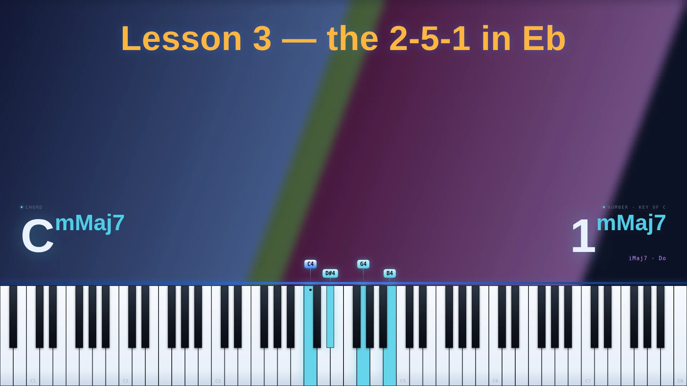
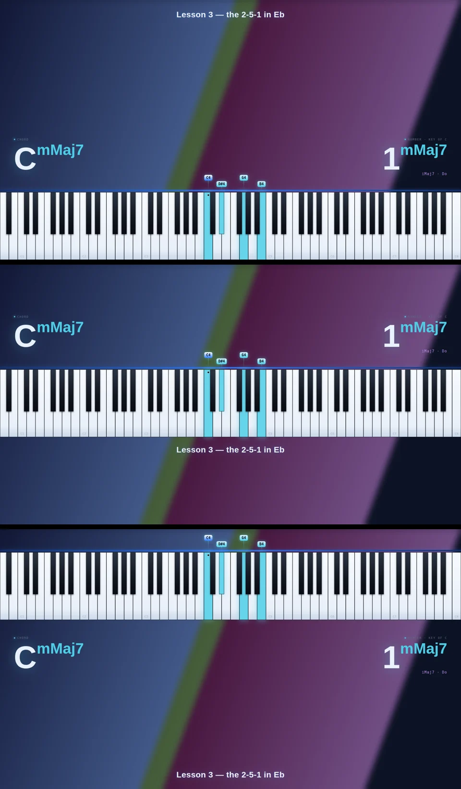
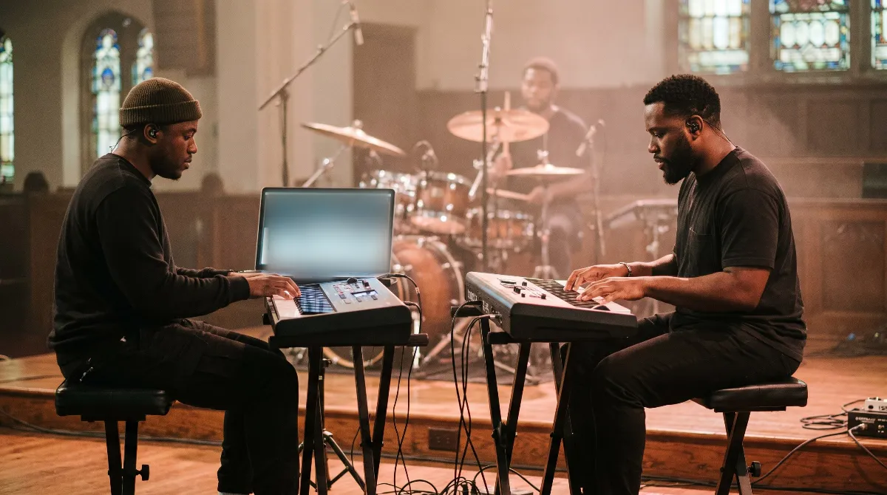
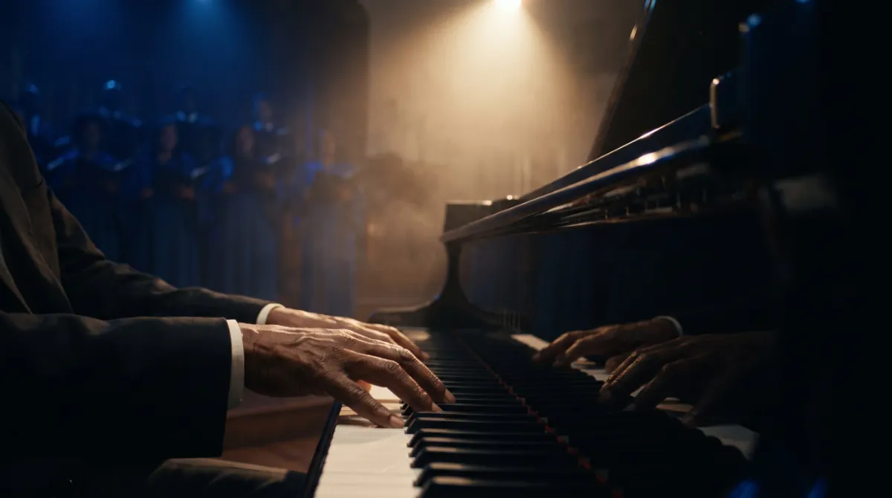

New Version 2.0 · free for everyone who owns 1.x
Chordlight 88
See every chord you play, then record it and make the lesson video in one step.
Chordlight 88 sits beside any MIDI keyboard and shows the chord name, the Nashville number and the sol-fa for whatever your hands are playing, with all 88 keys lit on screen. Version 2.0 records the take and draws a 1080p lesson clip for you.
$24 early bird price on 2.0, full price $48 · Version 2.0.6 · Windows and macOS · one licence for two computers
Listen · 1 min 20 s · Stephen on what Chordlight 88 does, and what is new in 2.0.

New in 2.0.6
Three Instruments, and Setup in Tabs
A free update for everyone who owns Chordlight 88. Open Amanorsac Hub on Windows or Mac and it will offer it to you.
Setup, in Four Tabs
Play, Sound, Clip and Look. Everything that was in the long drawer and its Advanced row is still there, sorted into four tabs, and Chordlight remembers which one you were on.
Attack and Release, by Hand
Under Setup › Sound. Release sets how long a note takes to fall silent after you lift the key; wind up the attack and the note fades in, which is how you get a swell out of a piano. The built-in instruments also hold about a third longer than before.
Built-In Sound Only
Keyboard input can now be switched off, so a clip made with Grand, SP or EP carries just the instrument and nothing of the room.
Grand 1, SP Natural and Soft EP 1
Amanorsac Studio's own sampled instruments, chosen on the title bar beside the note labels: Own, Grand, SP or EP. They play from your keyboard and go into every clip, WAV and Chordlight file, with the pedal, 96 voices and a limiter so big chords never distort. On a Mac the Grand is on from the first run. On Windows the sound starts off, because a DAW is usually making the sound there.
Mac: Video No Longer Blanks the Window
Video works the same on both systems, because Chordlight draws its own frames. On a Mac a clip gets its sound from the built-in instruments and your audio inputs, such as your keyboard's line out or a microphone through an interface. The one sound source that is Windows-only for now is System, which records whatever else the computer is playing, such as your DAW. It comes to the Mac in 2.1, and the crash it caused is gone.
If the Window Fails, It Comes Back
Should the recorder or the encoder ever fail, the window reloads itself with a message instead of staying blank, and writes a small log you can send in from About › Logs.
The Chord Display That Teaches While You Play
Chordlight 88 is a desktop app for Windows and Mac that reads the MIDI coming from your keyboard and shows you exactly what you played, the moment you play it. You get the chord name, the Nashville number in the key of the song, the Roman numeral and the sol-fa syllable, with every note lit on a full 88 key stage. Play harder and the keys glow brighter. Hold the pedal and the ringing notes stay lit.
That makes it useful in a lot of places. A piano teacher can put it on a second screen so students see the chord and the number appear as each one is played. A worship keys player can read numbers in the key of the song from a small pop-out window. And anyone filming keyboard lessons gets clean footage of the keys and the chords without a camera hanging over their hands.
Version 2.0 goes further. Press Rec and Chordlight saves the take. Press Video and it draws the lesson clip itself. If you already own Chordlight 88, the update is free in Amanorsac Hub and your key carries over.

New in 2.0
Record the Take and Make the Video
Until now a chord display could only show you what was happening. Chordlight 88 version 2.0 keeps it. Press Rec and the take is saved as a standard MIDI file, as 24 bit WAV audio, or as a .chordlight file that reopens later with the lights and the sound in sync. If you forgot to press anything, the Keep button rescues the last five minutes you played.
Press Video and Chordlight makes a finished lesson clip ready for YouTube, WhatsApp or a course platform. Here is the whole thing in 42 seconds.

Three Ways to Save What You Played
MIDI gives you a standard .mid file of exactly what you played, ready to drop into your DAW or your notation program.
WAV records 24 bit, 48 kHz audio from the keyboard and your microphone, mixed the way you set them.
.chordlight keeps the MIDI, the audio and the title together in one small file. Send it to a student and when they open it in Chordlight they see the lights and hear the audio exactly as you played it.

Video
A Lesson Video Drawn by the App
Chordlight does not record your screen. It renders every frame itself at 1080p, or 4K at Best quality, so the clip looks clean no matter what else is open on your computer. Your lesson title sits at the top, the readout plates keep the chord readable, and the last four chords climb away from the keys as you play.
Your audio inputs and the built-in instrument are mixed in on both systems, and on Windows the sound your computer is playing too. You get an MP4 where your system supports it and WebM where it does not, and the app tells you which.

Your Title and Backdrop
Set the lesson title in the font, size and colour you want. Put a picture, a looping video or a tint behind it, or use chroma green or blue when the editing happens somewhere else.

Keys Where You Need Them
Choose from three layouts so the keys sit at the top, the middle or the bottom of the frame. The readout plate keeps every chord name easy to read over any backdrop.

Live Clip Preview
The Clip Preview panel shows the video exactly as it will be recorded while you set it up. That way the first take is usually the one you keep.
Talk Over the Keys
Chordlight has a microphone input next to the keyboard input, each with its own meter. When you speak, the keys automatically duck under your voice and come back up when you stop, so a lesson sounds like a lesson without any editing. There is also an audio offset to line up the sound when you use Bluetooth or a slow USB interface.

MIDI
It Shares Your Keyboard
Most chord display apps on Windows grab the MIDI port for themselves. The moment they open, Kontakt goes quiet, your DAW stops receiving or the keyboard shows up as busy. So the tool that was meant to help you play stops you playing.
Chordlight 88 never opens a port exclusively. It listens alongside everything else, so your DAW, your sampler and Chordlight all hear the same keyboard at the same time. It can listen to every input at once, virtual cables show up like hardware, and a keyboard plugged in halfway through a session appears without a restart.
Readouts
Letters, Numbers and Sol-fa
Most chord displays only name chords in letters. But a huge part of the keyboard world reads music differently. Worship and gospel players, choirs and a lot of music teachers work in numbers and in sol-fa, so Chordlight reads all three at the same time from the same hands. Switch between them with one click, or show all three at once in pop-out windows.

Set the Key Once
Tell Chordlight the key of the song and every chord after that reads as a number in that key. Fmaj9 in C reads 4maj9, with the Roman numeral IVmaj9 underneath. Spelling follows the key, or you can force sharps or flats.
The Full Sol-fa Ladder
Chordlight uses all twelve syllables, Do Di Re Mo Mi Fa Fi So Si La Ta Ti, so chromatic notes get their proper names and not just the seven of the major scale.
Letters When You Want Them
The letter readout shows the root, the chord quality, any slash bass and the notes that are sounding, with the bass note marked on the keybed so you can see the inversion.

The Stage
All 88 Keys, Lit by Your Touch
The lighting follows velocity, so a note played hard reads brighter than a note played soft. Students can see the shape of a voicing and the weight behind it at the same time.
Note labels sit above the keys, and you choose the key size and the accent colour.

The Pedal Is Shown Too
Put the sustain pedal down and every note that is still ringing stays lit, while the readout counts them. That makes it easy to show a student why a passage sounds muddy, or how a pianist is building a sound across the pedal.
Built for a Camera
Windows That Stay Where You Put Them
The chord, the number and the keys can each detach into their own always on top window, so you can put them on a second screen, a projector or a stream overlay, then dock each one back when you are done. The readout area never changes size, so a two letter chord and a nine letter chord take up the same space and a recording never jumps when the chord changes.


Simple Until You Need More
Setup holds the everyday controls: the MIDI input and channel, the accent colour and the key size. Open Advanced and you get everything a clip needs, including the vocal input and ducking, the video quality, the clip title and font, the chord trail, the backdrop, the readout plate and the mix.
There are six accent colours, light and dark themes, and your own tint over any backdrop.

Made for the People Who Play
Chordlight was built on a church stage and in a teaching room, by a keys player who needed it.
Piano Teachers
Students watch the chord and the number appear as you play, and the recorded clip becomes the lesson hand-out.
Worship and Gigging Keys
Read Nashville numbers in the key of the song from a second screen or a small pop-out window.
Content Creators
Get a clean, branded clip of the keys and the chords with your picture or video behind it, or chroma green for the edit.
Self-Taught Players
Hear a voicing you like and see what it is called, in letters, numbers or the sol-fa you learned with.
Private by Design
There is no account inside the app, no analytics and no telemetry. The only time Chordlight talks to the internet is to activate your licence and to check in now and then, and it keeps working offline for 30 days between check-ins. It reads your MIDI input and your microphone and nothing else on your computer.
Tech Specs
Platforms
Windows 10 and 11 (x64).
macOS 12 and later, Apple silicon and Intel.
Format
Standalone desktop application. Windows: a zip with the installer inside. macOS: a zip with the disk image inside. Not a plug-in.
Range
88 keys, A0 to C8, with velocity sensitive lighting and sustain shown.
MIDI Input
Non-exclusive input on every port including virtual cables. One input or all at once, per channel or omni, hot plug.
Readouts
Chord name, Nashville number, Roman numeral, sol-fa, note list and chord quality.
Key Centre
Set once and numbers and spelling follow. Auto spelling from the key, or force sharps or flats.
Recording
MIDI (.mid), 24 bit 48 kHz WAV and .chordlight takes. Keep rescues the last five minutes.
Video
1080p drawn by the app, 4K at Best. Title, font, size and colour. Keys top, middle or bottom. Readout plate, chord trail, picture or looping video backdrop, chroma green or blue. MP4 where available, otherwise WebM.
Sound
Three built-in sampled instruments: Grand 1, SP Natural and Soft EP 1. Sustain pedal, 96 voices, limiter, Sound level. Adds about 110 MB.
Mix
Keyboard and vocal inputs with meters, automatic ducking, and an audio offset for Bluetooth or USB latency.
Windows
Main window plus three detachable always on top pop-outs.
Appearance
Light and dark, six accents, your own tint over a backdrop, adjustable key height.
Licence
One key for two computers, moved yourself with Deactivate this device. Works offline for 30 days between check-ins.
Network
Two licence calls to amanorsac.studio. No account in the app, no analytics, no telemetry.
Updates
Through Amanorsac Hub. Version 2.0 is free for everyone who owns 1.x.
Questions
Does it work with my keyboard?
Does it make sound?
Does it listen to audio to work out the chords?
What is a .chordlight file?
Does it record my screen?
Can I use it on two computers?
Does it need the internet?
Is there a plug-in or a phone version?
Will it really share any keyboard?
Chordlight 88
$24 $48
Early bird price on version 2.0, full price $48 after. One licence for two computers, installed and updated through Amanorsac Hub. Free for everyone who already owns 1.x.
How to Pay
In Ghana, pay with MTN MoMo. Everywhere else, pay by card.
Ghana · MTN MoMo
Pay at the studio's MoMo link, then send the screenshot.
- Open the link or scan the code. The request is to Stephen Amanor Sackey, 024 685 8947.
- Send the price of Chordlight 88. Not sure of the cedi amount? Ask on WhatsApp first.
- Send the screenshot to 024 685 8947 on WhatsApp with the app's name and the email of your account here. Your code comes back the same day and unlocks it in My Apps.

Everywhere Else · Card
Pay by card, or ask us anything first.
Use the Buy button above. It takes Visa, Mastercard and Apple Pay in US dollars, and Chordlight 88 is in My Apps the moment it clears.
Questions before you buy? Scan the code and message the studio on WhatsApp.
Message on WhatsApp